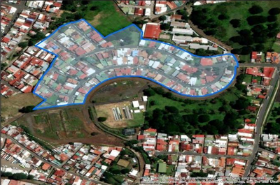

La ASADA Residencial Llanos del Molino se ubica en el distrito de Alajuela, cantón de Alajuela, frente a la entrada principal de la Universidad Técnica Nacional. El acueducto fue construido en el año 1990 con el objetivo de brindar el servicio de agua potable al residencial. El 16 de setiembre de 2008 se constituyó formalmente la ASADA, asumiendo la administración del acueducto. Este fue diseñado para abastecer un total de 168 propiedades destinadas a viviendas unifamiliares. Previo al 16 de setiembre de 2008, el acueducto fue administrado por una entidad denominada Sociedad de Usuarios del Agua y Zonas Verdes del Residencial Llanos del Molino. Finalmente, el 12 de setiembre de 2024 se eligió la nueva Junta Directiva de la ASADA del Residencial Llanos del Molino, correspondiente al período 2024–2026.
Brindar el servicio de agua intradomiciliaria a los habitantes del Residencial Llanos del Molino, siendo el agua apta para el consumo humano, y el servicio de calidad, cantidad y continuidad aceptable.
Seremos una organización ocupada por garantizar un servicio de agua para consumo humano de calidad, vigilaremos que el sistema de abastecimiento se mantenga operando en excelentes condiciones y actuaremos de manera oportuna en caso de desperfectos en el sistema. La comunidad nos percibirá como una organización orientada a resultados de alto grado y dispuesta a rendir cuentas oportunamente.
Medimos el cloro residual y hacemos el control operativo de la fuente y la red cada mes, con el apoyo del CAISA. Participamos en el Programa Sello de Calidad Sanitaria del Laboratorio Nacional de Aguas del AyA.
Informamos a los vecinos por WhatsApp, Facebook, correo y anuncios impresos, y compartimos consejos para ahorrar agua, reciclar y lavarse las manos.
Elegida el 12 de setiembre de 2024